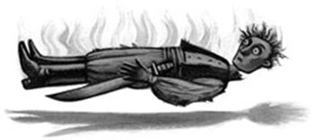

Harry woke up on Sunday morning to find the dormitory blazing with winter sunlight and his arm reboned but very stiff. He sat up quickly and looked over at Colin’s bed, but it had been blocked from view by the high curtains Harry had changed behind yesterday. Seeing that he was awake, Madam Pomfrey came bustling over with a breakfast tray and then began bending and stretching his arm and fingers.
“All in order,” she said as he clumsily fed himself porridge left-handed. “When you’ve finished eating, you may leave.”
Harry dressed as quickly as he could and hurried off to Gryffindor Tower, desperate to tell Ron and Hermione about Colin and Dobby, but they weren’t there. Harry left to look for them, wondering where they could have got to and feeling slightly hurt that they weren’t interested in whether he had his bones back or not.
As Harry passed the library, Percy Weasley strolled out of it, looking in far better spirits than last time they’d met.
“Oh, hello, Harry,” he said. “Excellent flying yesterday, really excellent. Gryffindor has just taken the lead for the House Cup — you earned fifty points!”
“You haven’t seen Ron or Hermione, have you?” said Harry.
“No, I haven’t,” said Percy, his smile fading. “I hope Ron’s not in another girls’ toilet. . . .”
Harry forced a laugh, watched Percy walk out of sight, and then headed straight for Moaning Myrtle’s bathroom. He couldn’t see why Ron and Hermione would be in there again, but after making sure that neither Filch nor any prefects were around, he opened the door and heard their voices coming from a locked stall.
“It’s me,” he said, closing the door behind him. There was a clunk, a splash, and a gasp from within the stall and he saw Hermione’s eye peering through the keyhole.
“Harry!” she said. “You gave us such a fright — come in — how’s your arm?”
“Fine,” said Harry, squeezing into the stall. An old cauldron was perched on the toilet, and a crackling from under the rim told Harry they had lit a fire beneath it. Conjuring up portable, waterproof fires was a speciality of Hermione’s.
“We’d’ve come to meet you, but we decided to get started on the Polyjuice Potion,” Ron explained as Harry, with difficulty, locked the stall again. “We’ve decided this is the safest place to hide it.”
Harry started to tell them about Colin, but Hermione interrupted.
“We already know — we heard Professor McGonagall telling Professor Flitwick this morning. That’s why we decided we’d better get going —”
“The sooner we get a confession out of Malfoy, the better,” snarled Ron. “D’you know what I think? He was in such a foul temper after the Quidditch match, he took it out on Colin.”
“There’s something else,” said Harry, watching Hermione tearing bundles of knotgrass and throwing them into the potion. “Dobby came to visit me in the middle of the night.”
Ron and Hermione looked up, amazed. Harry told them everything Dobby had told him — or hadn’t told him. Hermione and Ron listened with their mouths open.
“The Chamber of Secrets has been opened before?” Hermione said.
“This settles it,” said Ron in a triumphant voice. “Lucius Malfoy must’ve opened the Chamber when he was at school here and now he’s told dear old Draco how to do it. It’s obvious. Wish Dobby’d told you what kind of monster’s in there, though. I want to know how come nobody’s noticed it sneaking around the school.”
“Maybe it can make itself invisible,” said Hermione, prodding leeches to the bottom of the cauldron. “Or maybe it can disguise itself — pretend to be a suit of armor or something — I’ve read about Chameleon Ghouls —”
“You read too much, Hermione,” said Ron, pouring dead lacewings on top of the leeches. He crumpled up the empty lacewing bag and looked at Harry.
“So Dobby stopped us from getting on the train and broke your arm. . . .” He shook his head. “You know what, Harry? If he doesn’t stop trying to save your life he’s going to kill you.”
The news that Colin Creevey had been attacked and was now lying as though dead in the hospital wing had spread through the entire school by Monday morning. The air was suddenly thick with rumor and suspicion. The first years were now moving around the castle in tight-knit groups, as though scared they would be attacked if they ventured forth alone.
Ginny Weasley, who sat next to Colin Creevey in Charms, was distraught, but Harry felt that Fred and George were going the wrong way about cheering her up. They were taking turns covering themselves with fur or boils and jumping out at her from behind statues. They only stopped when Percy, apoplectic with rage, told them he was going to write to Mrs. Weasley and tell her Ginny was having nightmares.
Meanwhile, hidden from the teachers, a roaring trade in talismans, amulets, and other protective devices was sweeping the school. Neville Longbottom bought a large, evil-smelling green onion, a pointed purple crystal, and a rotting newt tail before the other Gryffindor boys pointed out that he was in no danger; he was a pureblood, and therefore unlikely to be attacked.
“They went for Filch first,” Neville said, his round face fearful. “And everyone knows I’m almost a Squib.”
In the second week of December Professor McGonagall came around as usual, collecting names of those who would be staying at school for Christmas. Harry, Ron, and Hermione signed her list; they had heard that Malfoy was staying, which struck them as very suspicious. The holidays would be the perfect time to use the Polyjuice Potion and try to worm a confession out of him.
Unfortunately, the potion was only half finished. They still needed the bicorn horn and the boomslang skin, and the only place they were going to get them was from Snape’s private stores. Harry privately felt he’d rather face Slytherin’s legendary monster than let Snape catch him robbing his office.
“What we need,” said Hermione briskly as Thursday afternoon’s double Potions lesson loomed nearer, “is a diversion. Then one of us can sneak into Snape’s office and take what we need.”
Harry and Ron looked at her nervously.
“I think I’d better do the actual stealing,” Hermione continued in a matter-of-fact tone. “You two will be expelled if you get into any more trouble, and I’ve got a clean record. So all you need to do is cause enough mayhem to keep Snape busy for five minutes or so.”
Harry smiled feebly. Deliberately causing mayhem in Snape’s Potions class was about as safe as poking a sleeping dragon in the eye.
Potions lessons took place in one of the large dungeons. Thursday afternoon’s lesson proceeded in the usual way. Twenty cauldrons stood steaming between the wooden desks, on which stood brass scales and jars of ingredients. Snape prowled through the fumes, making waspish remarks about the Gryffindors’ work while the Slytherins sniggered appreciatively. Draco Malfoy, who was Snape’s favorite student, kept flicking puffer-fish eyes at Ron and Harry, who knew that if they retaliated they would get detention faster than you could say “Unfair.”
Harry’s Swelling Solution was far too runny, but he had his mind on more important things. He was waiting for Hermione’s signal, and he hardly listened as Snape paused to sneer at his watery potion. When Snape turned and walked off to bully Neville, Hermione caught Harry’s eye and nodded.
Harry ducked swiftly down behind his cauldron, pulled one of Fred’s Filibuster fireworks out of his pocket, and gave it a quick prod with his wand. The firework began to fizz and sputter. Knowing he had only seconds, Harry straightened up, took aim, and lobbed it into the air; it landed right on target in Goyle’s cauldron.
Goyle’s potion exploded, showering the whole class. People shrieked as splashes of the Swelling Solution hit them. Malfoy got a faceful and his nose began to swell like a balloon; Goyle blundered around, his hands over his eyes, which had expanded to the size of a dinner plate — Snape was trying to restore calm and find out what had happened. Through the confusion, Harry saw Hermione slip quietly into Snape’s office.
“Silence! SILENCE!” Snape roared. “Anyone who has been splashed, come here for a Deflating Draught — when I find out who did this —”
Harry tried not to laugh as he watched Malfoy hurry forward, his head drooping with the weight of a nose like a small melon. As half the class lumbered up to Snape’s desk, some weighted down with arms like clubs, others unable to talk through gigantic puffed-up lips, Harry saw Hermione slide back into the dungeon, the front of her robes bulging.
When everyone had taken a swig of antidote and the various swellings had subsided, Snape swept over to Goyle’s cauldron and scooped out the twisted black remains of the firework. There was a sudden hush.
“If I ever find out who threw this,” Snape whispered, “I shall make sure that person is expelled.”
Harry arranged his face into what he hoped was a puzzled expression. Snape was looking right at him, and the bell that rang ten minutes later could not have been more welcome.
“He knew it was me,” Harry told Ron and Hermione as they hurried back to Moaning Myrtle’s bathroom. “I could tell.”
Hermione threw the new ingredients into the cauldron and began to stir feverishly.
“It’ll be ready in two weeks,” she said happily.
“Snape can’t prove it was you,” said Ron reassuringly to Harry. “What can he do?”
“Knowing Snape, something foul,” said Harry as the potion frothed and bubbled.
A week later, Harry, Ron, and Hermione were walking across the entrance hall when they saw a small knot of people gathered around the notice board, reading a piece of parchment that had just been pinned up. Seamus Finnigan and Dean Thomas beckoned them over, looking excited.
“They’re starting a Dueling Club!” said Seamus. “First meeting tonight! I wouldn’t mind dueling lessons; they might come in handy one of these days. . . .”
“What, you reckon Slytherin’s monster can duel?” said Ron, but he, too, read the sign with interest.
“Could be useful,” he said to Harry and Hermione as they went into dinner. “Shall we go?”
Harry and Hermione were all for it, so at eight o’clock that evening they hurried back to the Great Hall. The long dining tables had vanished and a golden stage had appeared along one wall, lit by thousands of candles floating overhead. The ceiling was velvety black once more and most of the school seemed to be packed beneath it, all carrying their wands and looking excited.
“I wonder who’ll be teaching us?” said Hermione as they edged into the chattering crowd. “Someone told me Flitwick was a dueling champion when he was young — maybe it’ll be him.”
“As long as it’s not —” Harry began, but he ended on a groan: Gilderoy Lockhart was walking onto the stage, resplendent in robes of deep plum and accompanied by none other than Snape, wearing his usual black.
Lockhart waved an arm for silence and called, “Gather round, gather round! Can everyone see me? Can you all hear me? Excellent!
“Now, Professor Dumbledore has granted me permission to start this little dueling club, to train you all in case you ever need to defend yourselves as I myself have done on countless occasions — for full details, see my published works.
“Let me introduce my assistant, Professor Snape,” said Lockhart, flashing a wide smile. “He tells me he knows a tiny little bit about dueling himself and has sportingly agreed to help me with a short demonstration before we begin. Now, I don’t want any of you youngsters to worry — you’ll still have your Potions master when I’m through with him, never fear!”
“Wouldn’t it be good if they finished each other off?” Ron muttered in Harry’s ear.
Snape’s upper lip was curling. Harry wondered why Lockhart was still smiling; if Snape had been looking at him like that he’d have been running as fast as he could in the opposite direction.
Lockhart and Snape turned to face each other and bowed; at least, Lockhart did, with much twirling of his hands, whereas Snape jerked his head irritably. Then they raised their wands like swords in front of them.
“As you see, we are holding our wands in the accepted combative position,” Lockhart told the silent crowd. “On the count of three, we will cast our first spells. Neither of us will be aiming to kill, of course.”
“I wouldn’t bet on that,” Harry murmured, watching Snape baring his teeth.
“One — two — three —”
Both of them swung their wands above their heads and pointed them at their opponent; Snape cried: “Expelliarmus!” There was a dazzling flash of scarlet light and Lockhart was blasted off his feet: He flew backward off the stage, smashed into the wall, and slid down it to sprawl on the floor.
Malfoy and some of the other Slytherins cheered. Hermione was dancing on tiptoes. “Do you think he’s all right?” she squealed through her fingers.
“Who cares?” said Harry and Ron together.
Lockhart was getting unsteadily to his feet. His hat had fallen off and his wavy hair was standing on end.
“Well, there you have it!” he said, tottering back onto the platform. “That was a Disarming Charm — as you see, I’ve lost my wand — ah, thank you, Miss Brown — yes, an excellent idea to show them that, Professor Snape, but if you don’t mind my saying so, it was very obvious what you were about to do. If I had wanted to stop you it would have been only too easy — however, I felt it would be instructive to let them see . . .”
Snape was looking murderous. Possibly Lockhart had noticed, because he said, “Enough demonstrating! I’m going to come amongst you now and put you all into pairs. Professor Snape, if you’d like to help me —”
They moved through the crowd, matching up partners. Lockhart teamed Neville with Justin Finch-Fletchley, but Snape reached Harry and Ron first.
“Time to split up the dream team, I think,” he sneered. “Weasley, you can partner Finnigan. Potter —”
Harry moved automatically toward Hermione.
“I don’t think so,” said Snape, smiling coldly. “Mr. Malfoy, come over here. Let’s see what you make of the famous Potter. And you, Miss Granger — you can partner Miss Bulstrode.”
Malfoy strutted over, smirking. Behind him walked a Slytherin girl who reminded Harry of a picture he’d seen in Holidays with Hags. She was large and square and her heavy jaw jutted aggressively. Hermione gave her a weak smile that she did not return.
“Face your partners!” called Lockhart, back on the platform. “And bow!”
Harry and Malfoy barely inclined their heads, not taking their eyes off each other.
“Wands at the ready!” shouted Lockhart. “When I count to three, cast your charms to Disarm your opponents — only to disarm them — we don’t want any accidents — one . . . two . . . three —”
Harry swung his wand high, but Malfoy had already started on “two”: His spell hit Harry so hard he felt as though he’d been hit over the head with a saucepan. He stumbled, but everything still seemed to be working, and wasting no more time, Harry pointed his wand straight at Malfoy and shouted, “Rictusempra!”
A jet of silver light hit Malfoy in the stomach and he doubled up, wheezing.
“I said Disarm only!” Lockhart shouted in alarm over the heads of the battling crowd, as Malfoy sank to his knees; Harry had hit him with a Tickling Charm, and he could barely move for laughing. Harry hung back, with a vague feeling it would be unsporting to bewitch Malfoy while he was on the floor, but this was a mistake; gasping for breath, Malfoy pointed his wand at Harry’s knees, choked, “Tarantallegra!” and the next second Harry’s legs began to jerk around out of his control in a kind of quickstep.
“Stop! Stop!” screamed Lockhart, but Snape took charge.
“Finite Incantatem!” he shouted; Harry’s feet stopped dancing, Malfoy stopped laughing, and they were able to look up.
A haze of greenish smoke was hovering over the scene. Both Neville and Justin were lying on the floor, panting; Ron was holding up an ashen-faced Seamus, apologizing for whatever his broken wand had done; but Hermione and Millicent Bulstrode were still moving; Millicent had Hermione in a headlock and Hermione was whimpering in pain; both their wands lay forgotten on the floor. Harry leapt forward and pulled Millicent off. It was difficult: She was a lot bigger than he was.
“Dear, dear,” said Lockhart, skittering through the crowd, looking at the aftermath of the duels. “Up you go, Macmillan. . . . Careful there, Miss Fawcett. . . . Pinch it hard, it’ll stop bleeding in a second, Boot —
“I think I’d better teach you how to block unfriendly spells,” said Lockhart, standing flustered in the midst of the hall. He glanced at Snape, whose black eyes glinted, and looked quickly away. “Let’s have a volunteer pair — Longbottom and Finch-Fletchley, how about you —”
“A bad idea, Professor Lockhart,” said Snape, gliding over like a large and malevolent bat. “Longbottom causes devastation with the simplest spells. We’ll be sending what’s left of Finch-Fletchley up to the hospital wing in a matchbox.” Neville’s round, pink face went pinker. “How about Malfoy and Potter?” said Snape with a twisted smile.
“Excellent idea!” said Lockhart, gesturing Harry and Malfoy into the middle of the hall as the crowd backed away to give them room.
“Now, Harry,” said Lockhart. “When Draco points his wand at you, you do this.”
He raised his own wand, attempted a complicated sort of wiggling action, and dropped it. Snape smirked as Lockhart quickly picked it up, saying, “Whoops — my wand is a little overexcited —”
Snape moved closer to Malfoy, bent down, and whispered something in his ear. Malfoy smirked, too. Harry looked up nervously at Lockhart and said, “Professor, could you show me that blocking thing again?”
“Scared?” muttered Malfoy, so that Lockhart couldn’t hear him.
“You wish,” said Harry out of the corner of his mouth.
Lockhart cuffed Harry merrily on the shoulder. “Just do what I did, Harry!”
“What, drop my wand?”
But Lockhart wasn’t listening.
“Three — two — one — go!” he shouted.
Malfoy raised his wand quickly and bellowed, “Serpensortia!”
The end of his wand exploded. Harry watched, aghast, as a long black snake shot out of it, fell heavily onto the floor between them, and raised itself, ready to strike. There were screams as the crowd backed swiftly away, clearing the floor.
“Don’t move, Potter,” said Snape lazily, clearly enjoying the sight of Harry standing motionless, eye to eye with the angry snake. “I’ll get rid of it. . . .”
“Allow me!” shouted Lockhart. He brandished his wand at the snake and there was a loud bang; the snake, instead of vanishing, flew ten feet into the air and fell back to the floor with a loud smack. Enraged, hissing furiously, it slithered straight toward Justin Finch-Fletchley and raised itself again, fangs exposed, poised to strike.
Harry wasn’t sure what made him do it. He wasn’t even aware of deciding to do it. All he knew was that his legs were carrying him forward as though he was on casters and that he had shouted stupidly at the snake, “Leave him alone!” And miraculously — inexplicably — the snake slumped to the floor, docile as a thick, black garden hose, its eyes now on Harry. Harry felt the fear drain out of him. He knew the snake wouldn’t attack anyone now, though how he knew it, he couldn’t have explained.
He looked up at Justin, grinning, expecting to see Justin looking relieved, or puzzled, or even grateful — but certainly not angry and scared.
“What do you think you’re playing at?” he shouted, and before Harry could say anything, Justin had turned and stormed out of the hall.
Snape stepped forward, waved his wand, and the snake vanished in a small puff of black smoke. Snape, too, was looking at Harry in an unexpected way: It was a shrewd and calculating look, and Harry didn’t like it. He was also dimly aware of an ominous muttering all around the walls. Then he felt a tugging on the back of his robes.
“Come on,” said Ron’s voice in his ear. “Move — come on —”
Ron steered him out of the hall, Hermione hurrying alongside them. As they went through the doors, the people on either side drew away as though they were frightened of catching something. Harry didn’t have a clue what was going on, and neither Ron nor Hermione explained anything until they had dragged him all the way up to the empty Gryffindor common room. Then Ron pushed Harry into an armchair and said, “You’re a Parselmouth. Why didn’t you tell us?”
“I’m a what?” said Harry.
“A Parselmouth!” said Ron. “You can talk to snakes!”
“I know,” said Harry. “I mean, that’s only the second time I’ve ever done it. I accidentally set a boa constrictor on my cousin Dudley at the zoo once — long story — but it was telling me it had never seen Brazil and I sort of set it free without meaning to — that was before I knew I was a wizard —”
“A boa constrictor told you it had never seen Brazil?” Ron repeated faintly.
“So?” said Harry. “I bet loads of people here can do it.”
“Oh, no they can’t,” said Ron. “It’s not a very common gift. Harry, this is bad.”
“What’s bad?” said Harry, starting to feel quite angry. “What’s wrong with everyone? Listen, if I hadn’t told that snake not to attack Justin —”
“Oh, that’s what you said to it?”
“What d’you mean? You were there — you heard me —”
“I heard you speaking Parseltongue,” said Ron. “Snake language. You could have been saying anything — no wonder Justin panicked, you sounded like you were egging the snake on or something — it was creepy, you know —”
Harry gaped at him.
“I spoke a different language? But — I didn’t realize — how can I speak a language without knowing I can speak it?”
Ron shook his head. Both he and Hermione were looking as though someone had died. Harry couldn’t see what was so terrible.
“D’you want to tell me what’s wrong with stopping a massive snake biting off Justin’s head?” he said. “What does it matter how I did it as long as Justin doesn’t have to join the Headless Hunt?”
“It matters,” said Hermione, speaking at last in a hushed voice, “because being able to talk to snakes was what Salazar Slytherin was famous for. That’s why the symbol of Slytherin House is a serpent.”
Harry’s mouth fell open.
“Exactly,” said Ron. “And now the whole school’s going to think you’re his great-great-great-great-grandson or something —”
“But I’m not,” said Harry, with a panic he couldn’t quite explain.
“You’ll find that hard to prove,” said Hermione. “He lived about a thousand years ago; for all we know, you could be.”
Harry lay awake for hours that night. Through a gap in the curtains around his four-poster he watched snow starting to drift past the tower window and wondered . . .
Could he be a descendant of Salazar Slytherin? He didn’t know anything about his father’s family, after all. The Dursleys had always forbidden questions about his Wizarding relatives.
Quietly, Harry tried to say something in Parseltongue. The words wouldn’t come. It seemed he had to be face-to-face with a snake to do it.
But I’m in Gryffindor, Harry thought.The Sorting Hat wouldn’t have put me in here if I had Slytherin blood. . . .
Ah, said a nasty little voice in his brain, but the Sorting Hat wanted to put you in Slytherin, don’t you remember?
Harry turned over. He’d see Justin the next day in Herbology and he’d explain that he’d been calling the snake off, not egging it on, which (he thought angrily, pummeling his pillow) any fool should have realized.
By next morning, however, the snow that had begun in the night had turned into a blizzard so thick that the last Herbology lesson of the term was canceled: Professor Sprout wanted to fit socks and scarves on the Mandrakes, a tricky operation she would entrust to no one else, now that it was so important for the Mandrakes to grow quickly and revive Mrs. Norris and Colin Creevey.
Harry fretted about this next to the fire in the Gryffindor common room, while Ron and Hermione used their time off to play a game of wizard chess.
“For heaven’s sake, Harry,” said Hermione, exasperated, as one of Ron’s bishops wrestled her knight off his horse and dragged him off the board. “Go and find Justin if it’s so important to you.”
So Harry got up and left through the portrait hole, wondering where Justin might be.
The castle was darker than it usually was in daytime because of the thick, swirling gray snow at every window. Shivering, Harry walked past classrooms where lessons were taking place, catching snatches of what was happening within. Professor McGonagall was shouting at someone who, by the sound of it, had turned his friend into a badger. Resisting the urge to take a look, Harry walked on by, thinking that Justin might be using his free time to catch up on some work, and deciding to check the library first.
A group of the Hufflepuffs who should have been in Herbology were indeed sitting at the back of the library, but they didn’t seem to be working. Between the long lines of high bookshelves, Harry could see that their heads were close together and they were having what looked like an absorbing conversation. He couldn’t see whether Justin was among them. He was walking toward them when something of what they were saying met his ears, and he paused to listen, hidden in the Invisibility section.
“So anyway,” a stout boy was saying, “I told Justin to hide up in our dormitory. I mean to say, if Potter’s marked him down as his next victim, it’s best if he keeps a low profile for a while. Of course, Justin’s been waiting for something like this to happen ever since he let slip to Potter he was Muggle-born. Justin actually told him he’d been down for Eton. That’s not the kind of thing you bandy about with Slytherin’s heir on the loose, is it?”
“You definitely think it is Potter, then, Ernie?” said a girl with blonde pigtails anxiously.
“Hannah,” said the stout boy solemnly, “he’s a Parselmouth. Everyone knows that’s the mark of a Dark wizard. Have you ever heard of a decent one who could talk to snakes? They called Slytherin himself Serpent-tongue.”
There was some heavy murmuring at this, and Ernie went on, “Remember what was written on the wall? Enemies of the Heir, Beware. Potter had some sort of run-in with Filch. Next thing we know, Filch’s cat’s attacked. That first year, Creevey, was annoying Potter at the Quidditch match, taking pictures of him while he was lying in the mud. Next thing we know — Creevey’s been attacked.”
“He always seems so nice, though,” said Hannah uncertainly, “and, well, he’s the one who made You-Know-Who disappear. He can’t be all bad, can he?”
Ernie lowered his voice mysteriously, the Hufflepuffs bent closer, and Harry edged nearer so that he could catch Ernie’s words.
“No one knows how he survived that attack by You-Know-Who. I mean to say, he was only a baby when it happened. He should have been blasted into smithereens. Only a really powerful Dark wizard could have survived a curse like that.” He dropped his voice until it was barely more than a whisper, and said, “That’s probably why You-Know-Who wanted to kill him in the first place. Didn’t want another Dark Lord competing with him. I wonder what other powers Potter’s been hiding?”
Harry couldn’t take anymore. Clearing his throat loudly, he stepped out from behind the bookshelves. If he hadn’t been feeling so angry, he would have found the sight that greeted him funny: Every one of the Hufflepuffs looked as though they had been Petrified by the sight of him, and the color was draining out of Ernie’s face.
“Hello,” said Harry. “I’m looking for Justin Finch-Fletchley.”
The Hufflepuffs’ worst fears had clearly been confirmed. They all looked fearfully at Ernie.
“What do you want with him?” said Ernie in a quavering voice.
“I wanted to tell him what really happened with that snake at the Dueling Club,” said Harry.
Ernie bit his white lips and then, taking a deep breath, said, “We were all there. We saw what happened.”
“Then you noticed that after I spoke to it, the snake backed off?” said Harry.
“All I saw,” said Ernie stubbornly, though he was trembling as he spoke, “was you speaking Parseltongue and chasing the snake toward Justin.”
“I didn’t chase it at him!” Harry said, his voice shaking with anger. “It didn’t even touch him!”
“It was a very near miss,” said Ernie. “And in case you’re getting ideas,” he added hastily, “I might tell you that you can trace my family back through nine generations of witches and warlocks and my blood’s as pure as anyone’s, so —”
“I don’t care what sort of blood you’ve got!” said Harry fiercely. “Why would I want to attack Muggle-borns?”
“I’ve heard you hate those Muggles you live with,” said Ernie swiftly.
“It’s not possible to live with the Dursleys and not hate them,” said Harry. “I’d like to see you try it.”
He turned on his heel and stormed out of the library, earning himself a reproving glare from Madam Pince, who was polishing the gilded cover of a large spell book.
Harry blundered up the corridor, barely noticing where he was going, he was in such a fury. The result was that he walked into something very large and solid, which knocked him backward onto the floor.
“Oh, hello, Hagrid,” Harry said, looking up.
Hagrid’s face was entirely hidden by a woolly, snow-covered balaclava, but it couldn’t possibly be anyone else, as he filled most of the corridor in his moleskin overcoat. A dead rooster was hanging from one of his massive, gloved hands.
“All righ’, Harry?” he said, pulling up the balaclava so he could speak. “Why aren’t yeh in class?”
“Canceled,” said Harry, getting up. “What’re you doing in here?”
Hagrid held up the limp rooster.
“Second one killed this term,” he explained. “It’s either foxes or a Blood-Suckin’ Bugbear, an’ I need the headmaster’s permission ter put a charm around the hen coop.”
He peered more closely at Harry from under his thick, snow-flecked eyebrows.
“Yeh sure yeh’re all righ’? Yeh look all hot an’ bothered —”
Harry couldn’t bring himself to repeat what Ernie and the rest of the Hufflepuffs had been saying about him.
“It’s nothing,” he said. “I’d better get going, Hagrid, it’s Transfiguration next and I’ve got to pick up my books.”
He walked off, his mind still full of what Ernie had said about him.
“Justin’s been waiting for something like this to happen ever since he let slip to Potter he was Muggle-born. . . .”
Harry stamped up the stairs and turned along another corridor, which was particularly dark; the torches had been extinguished by a strong, icy draft that was blowing through a loose windowpane. He was halfway down the passage when he tripped headlong over something lying on the floor.
He turned to squint at what he’d fallen over and felt as though his stomach had dissolved.
Justin Finch-Fletchley was lying on the floor, rigid and cold, a look of shock frozen on his face, his eyes staring blankly at the ceiling. And that wasn’t all. Next to him was another figure, the strangest sight Harry had ever seen.
It was Nearly Headless Nick, no longer pearly-white and transparent, but black and smoky, floating immobile and horizontal, six inches off the floor. His head was half off and his face wore an expression of shock identical to Justin’s.
Harry got to his feet, his breathing fast and shallow, his heart doing a kind of drumroll against his ribs. He looked wildly up and down the deserted corridor and saw a line of spiders scuttling as fast as they could away from the bodies. The only sounds were the muffled voices of teachers from the classes on either side.
He could run, and no one would ever know he had been there. But he couldn’t just leave them lying here. . . . He had to get help. . . . Would anyone believe he hadn’t had anything to do with this?
As he stood there, panicking, a door right next to him opened with a bang. Peeves the Poltergeist came shooting out.
“Why, it’s potty wee Potter!” cackled Peeves, knocking Harry’s glasses askew as he bounced past him. “What’s Potter up to? Why’s Potter lurking —”
Peeves stopped, halfway through a midair somersault. Upside down, he spotted Justin and Nearly Headless Nick. He flipped the right way up, filled his lungs and, before Harry could stop him, screamed, “ATTACK! ATTACK! ANOTHER ATTACK! NO MORTAL OR GHOST IS SAFE! RUN FOR YOUR LIVES! ATTAAAACK!”
Crash — crash — crash — door after door flew open along the corridor and people flooded out. For several long minutes, there was a scene of such confusion that Justin was in danger of being squashed and people kept standing in Nearly Headless Nick. Harry found himself pinned against the wall as the teachers shouted for quiet. Professor McGonagall came running, followed by her own class, one of whom still had black-and-white-striped hair. She used her wand to set off a loud bang, which restored silence, and ordered everyone back into their classes. No sooner had the scene cleared somewhat than Ernie the Hufflepuff arrived, panting, on the scene.
“Caught in the act!” Ernie yelled, his face stark white, pointing his finger dramatically at Harry.
“That will do, Macmillan!” said Professor McGonagall sharply.
Peeves was bobbing overhead, now grinning wickedly, surveying the scene; Peeves always loved chaos. As the teachers bent over Justin and Nearly Headless Nick, examining them, Peeves broke into song:
“That’s enough, Peeves!” barked Professor McGonagall, and Peeves zoomed away backward, with his tongue out at Harry.
Justin was carried up to the hospital wing by Professor Flitwick and Professor Sinistra of the Astronomy department, but nobody seemed to know what to do for Nearly Headless Nick. In the end, Professor McGonagall conjured a large fan out of thin air, which she gave to Ernie with instructions to waft Nearly Headless Nick up the stairs. This Ernie did, fanning Nick along like a silent black hovercraft. This left Harry and Professor McGonagall alone together.
“This way, Potter,” she said.
“Professor,” said Harry at once, “I swear I didn’t —”
“This is out of my hands, Potter,” said Professor McGonagall curtly.
They marched in silence around a corner and she stopped before a large and extremely ugly stone gargoyle.
“Lemon drop!” she said. This was evidently a password, because the gargoyle sprang suddenly to life and hopped aside as the wall behind him split in two. Even full of dread for what was coming, Harry couldn’t fail to be amazed. Behind the wall was a spiral staircase that was moving smoothly upward, like an escalator. As he and Professor McGonagall stepped onto it, Harry heard the wall thud closed behind them. They rose upward in circles, higher and higher, until at last, slightly dizzy, Harry saw a gleaming oak door ahead, with a brass knocker in the shape of a griffin.
He knew now where he was being taken. This must be where Dumbledore lived.